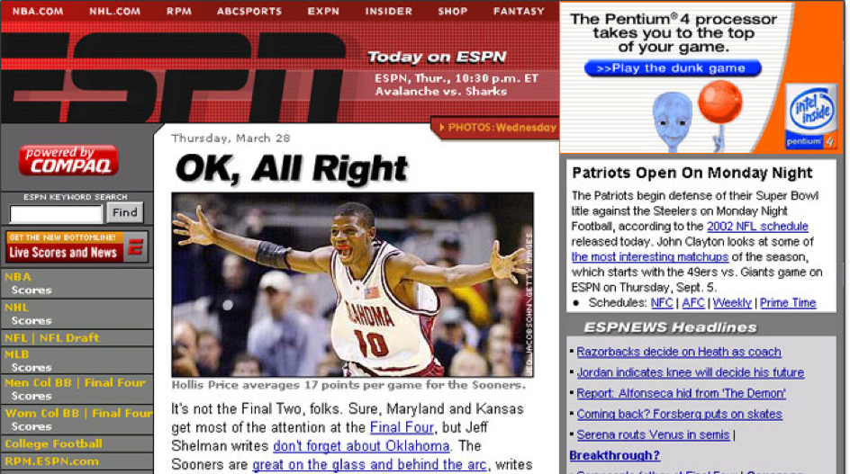
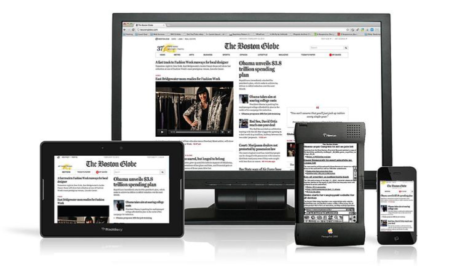

1957
Uitvinding van het internet
Als antwoord op de lancering van de Russische Spoetnik 1, richtte de Amerikaanse ministerie van defensie ARPA op. Een van de projecten binnen ARPA was het effecient gebruik laten maken van hun computersystemen door universitaire instellingen die voor hun aan het werk waren.
1980
Tim Berners-Lee proposal
Tim Berners-Lee was tijdens zijn werk bij CERN belast met de taak van datacollectie. Hij startte daar een personelijk project op die data te distribueren. Hiervoor schreef hij een proposal van 3 pagina’s, wat de basis is voor het huidige HTML.
2002

CSS based redesign ESPN en Wiredd
HTML werd misbruikt om de grafische presentatie van websites aan te passen. ESPN en Wiredd waren de eerste grote websites die over gingen van html based design naar css based design. Zij hebben de deuren geopend voor de wereld, om dit principe ook te omarmen
2009

Margin: auto;
Flexbox is een feit! Een doorn in het oog van veel front-end developers, was het vertical uitlijnen van een element in een ander element. Met de komst van flexbox is dit zo makkelijk als: margin: auto;
2010
Bye IE6
Moderne browsers zijn altijd eager geweest om nieuwe technologieen te omarmen. Dit zorgde ervoor dat het web zich snel heeft kunnen evolueren. Alleen Internet Explorer 6 bleef achter. Omdat dit standaard werd meegeleverd met windows XP wat op veel coorporate systemen stond, was dit een struggle voor ontwikkelaars.
2011

Responsive websites van Microsoft en Boston Globe
Na een presentatie op South by South West over het promoten van responsive webdesign werd het vrijwel alleen toegepast op kleinere portfolio websites. Nadat Microsoft en Boston Globe in 2011 hun responsive websites introduceerden, kreeg deze term het gedachtengoed erachter tractie.
2012

CSS3
Door de komst van CSS3 zijn veel hacks niet meer nodig om specifieke stijlelementen te realiseren op een webpagina. De opkomst die gepaard ging met HTML5 en de bijbehorende technologieen, hebben ervoor gezorgd dat Apple Flash buitenspel heeft kunnen zetten.
2011

Twitter Blueprint / Bootstrap
Twitter bracht een opensource framework uit, bestaande uit verschillende grafische elementen voor websites. Dit project werd masaal omarmd door een grote community van ontwikkelaars, die zich niet meer druk hoefde te maken over het pixel-perfect maken van basis elementen